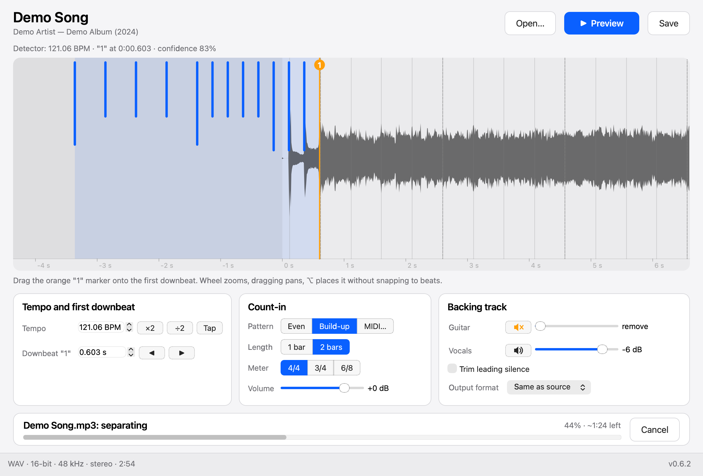
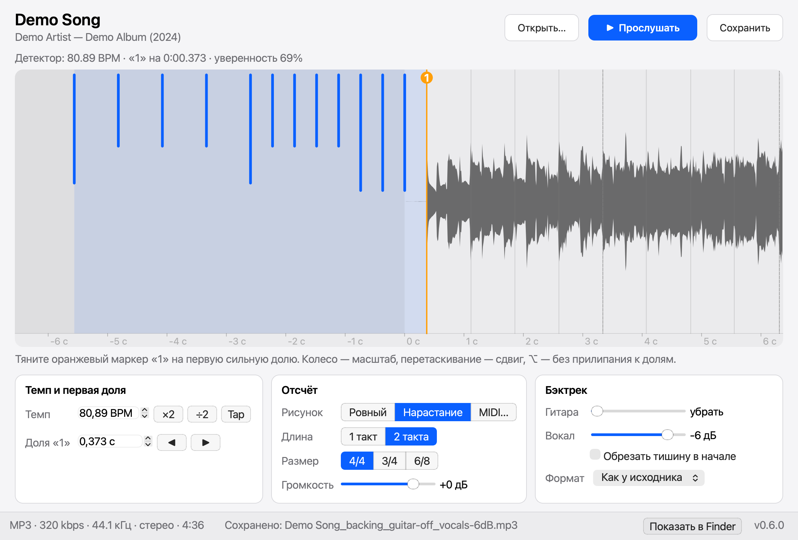
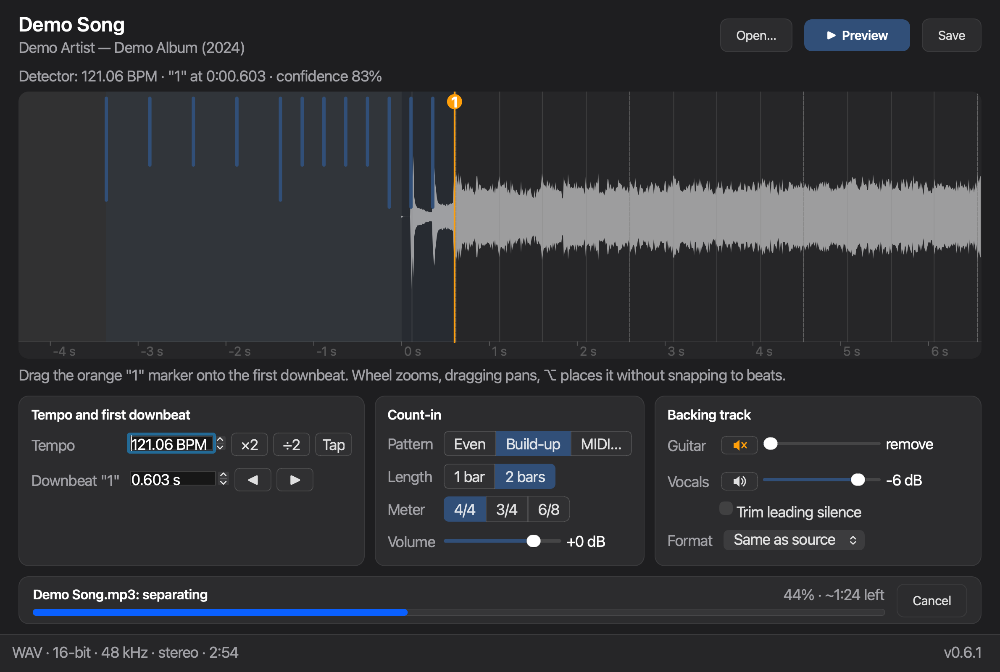
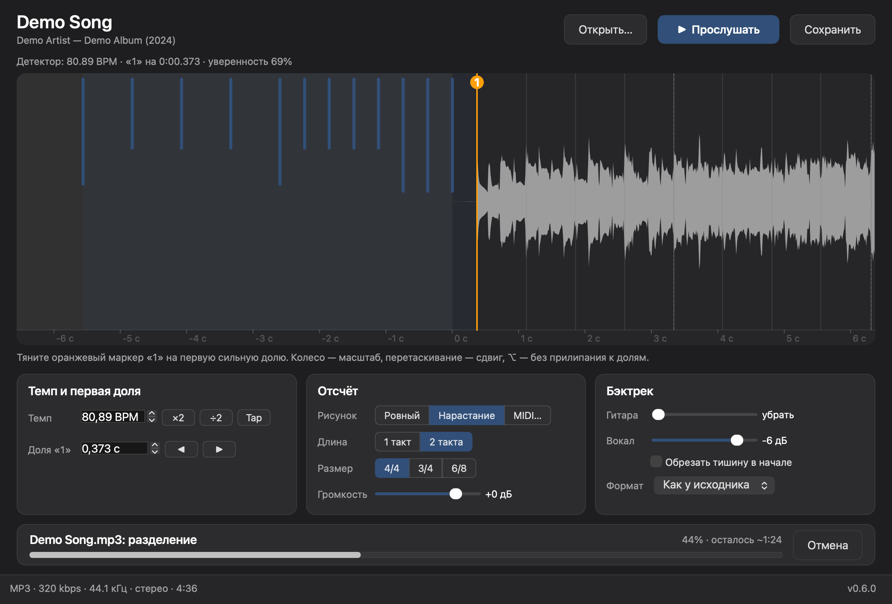

Finds the tempo and the first downbeat, then puts a drum count-in in front of the song. The last click lands exactly one beat before the “one”. The same song can become a backing track without guitar or vocals. Находит темп и первую сильную долю и ставит перед песней отсчёт палочками. Последний щелчок звучит ровно за долю до «раз». Ту же песню можно превратить в минусовку без гитары или вокала.
Free · about 800 MB · works offline · all releases Бесплатно · около 800 МБ · работает без интернета · все версии


All four versions play in sync, so switch while it plays. A 2-bar build-up count-in, 121 BPM. Song: “The First Clear Mile”, made with Suno. Все четыре версии играют синхронно, переключайте прямо во время воспроизведения. Отсчёт в два такта с нарастанием, 121 BPM. Песня «The First Clear Mile» сделана в Suno.
A neural beat tracker finds the tempo and the first downbeat. Clicks are placed sample by sample, so the timing never drifts.
Нейросеть находит темп и первую сильную долю. Каждый щелчок ставится с точностью до сэмпла, поэтому ритм не уплывает.
One or two bars in 4/4, 3/4 or 6/8. Even, build-up with the last hits louder, or your own pattern from a MIDI file.
Один или два такта в 4/4, 3/4 или 6/8. Ровный, с нарастанием и акцентом в конце или свой рисунок из MIDI-файла.
BS-RoFormer separates guitar and vocals in one pass. Each gets its own slider, from a few dB down to fully removed.
BS-RoFormer отделяет гитару и вокал за один проход. У каждого свой ползунок: приглушить на пару дБ или убрать совсем.
Press Space to hear the count-in and the first seconds of the song. The sliders change the mix while it plays.
Пробел проигрывает отсчёт и начало песни. Ползунки меняют звук прямо во время прослушивания.
Opens mp3, FLAC, ALAC and WAV. Saves MP3 320 kbps, FLAC, ALAC or WAV with tags and cover art kept, sorted into Artist / Album folders if you like.
Открывает mp3, FLAC, ALAC и WAV. Сохраняет MP3 320 кбит/с, FLAC, ALAC или WAV с тегами и обложкой, по желанию раскладывает по папкам «Исполнитель / Альбом».
Everything runs on your computer. The network is used only to check for updates, which install themselves.
Всё работает на вашем компьютере. Интернет нужен только для обновлений, и они ставятся сами.


Separation takes about 2.5 minutes for a 4-minute song on an Apple Silicon Mac and longer on Windows, where it runs on the CPU. Разделение 4-минутной песни занимает около 2,5 минуты на Mac с Apple Silicon и дольше на Windows, где считает только процессор.
Unzip and drag Count-In.app to Applications. The first launch gets blocked because the app is unsigned: open System Settings → Privacy & Security and click “Open Anyway”.
Распакуйте и перетащите Count-In.app в «Программы». Первый запуск система заблокирует, потому что программа не подписана. Откройте Системные настройки → Конфиденциальность и безопасность и нажмите «Всё равно открыть».
Unzip and run Count-In.exe. If SmartScreen appears, click “More info” → “Run anyway”.
Распакуйте и запустите Count-In.exe. Если появится SmartScreen, нажмите «Подробнее» → «Выполнить в любом случае».